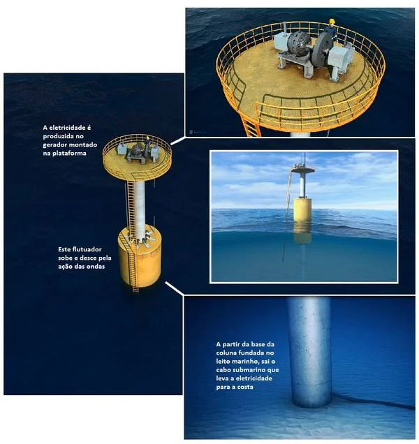
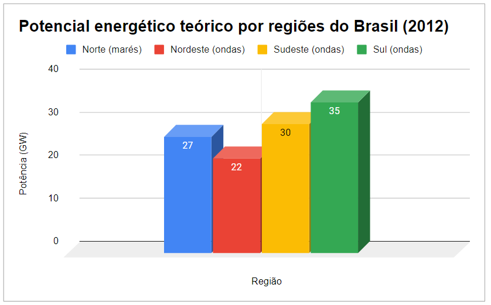
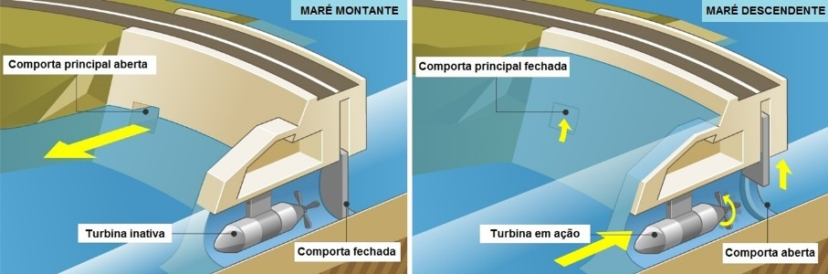
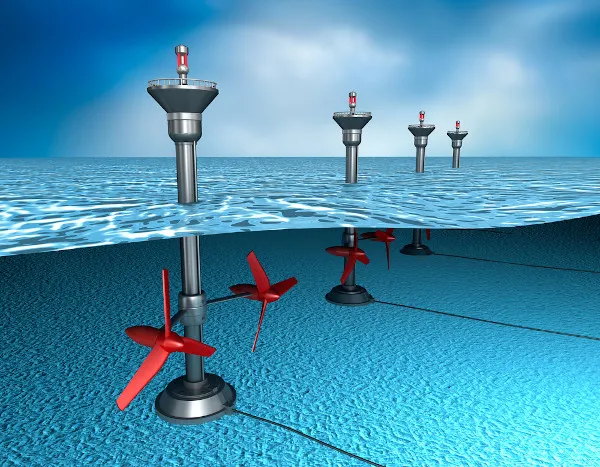

A energia das ondas e das marés é uma forma de energia renovável derivada das oscilações e movimentos das ondas do mar e das marés oceânicas. Essa energia é capturada e convertida em eletricidade utilizável.
Como é gerada
Energia das Ondas
Dispositivos Oscilantes: Utilizam o movimento das ondas para fazer com que dispositivos flutuem ou oscilem, acionando geradores que convertem essa energia cinética em eletricidade.
Como funciona a energia das ondas e das marés
Dispositivos de Ondas de Conversão Direta: Capturam a energia cinética das ondas diretamente, sem a necessidade de partes móveis, usando tecnologias como câmaras de ar ou colunas de água.

Imagem: Divulgação Coppe/UFRJ
Com base na fonte "ENERGIAS RENOVÁVEIS E SUSTENTABILIDADE" (2012), foi destacado o potencial energético do Brasil proveniente de ondas e marés. Estima-se que esse potencial seja de 114 GW, podendo contribuir significativamente para a expansão da oferta de energia e para a diversificação da matriz energética do país. Esse potencial é distribuído entre diferentes regiões, com 27 GW provenientes de marés na região Norte, 22 GW de ondas na região Nordeste, 30 GW de ondas na região Sudeste e 35 GW de ondas na região Sul.

Potencial energéico teórico por regioes do Brasil (2012)
Energia das Marés
Barragens de Marés: Funcionam de maneira similar a uma hidrelétrica, mas em vez de aproveitar a força da água corrente de rios, aproveitam a diferença de altura entre as marés alta e baixa para girar turbinas e gerar eletricidade.

Barragem de Marés
Tecnologias de Corrente de Marés: Utilizam turbinas subaquáticas para capturar a energia cinética das correntes de maré.

Turbinas submersas utilizadas na geração de energia maremotriz.
Custo
Os custos de implantação e operação de projetos de energia das ondas e das marés podem variar significativamente dependendo da tecnologia específica, localização geográfica e condições ambientais. Geralmente, os custos iniciais tendem a ser mais elevados em comparação com outras formas de energias renováveis devido à natureza complexa e ainda em desenvolvimento dessas tecnologias. No entanto, os custos estão gradualmente diminuindo à medida que a tecnologia avança e a escala de produção aumenta.
Benefícios para o meio ambiente
Energia das Ondas
Baixo Impacto Visual: As instalações de energia das ondas podem ser localizadas longe da costa, minimizando o impacto visual.
Baixa Emissão de Gases de Efeito Estufa: Não produz emissões significativas de gases de efeito estufa durante a geração de eletricidade.
Impacto na Vida Marinha: Dependendo do projeto, pode haver impacto mínimo na vida marinha se as estruturas forem devidamente projetadas e instaladas.
Energia das Marés
Energia Previsível: As marés são previsíveis, o que permite uma geração estável de eletricidade.
Baixa Emissão de Gases de Efeito Estufa: Assim como na energia das ondas, a geração de eletricidade a partir das marés tem baixas emissões de gases de efeito estufa.
Restauração de Ecossistemas: Projetos bem planejados podem incluir medidas para restaurar habitats costeiros e melhorar a saúde dos ecossistemas marinhos.